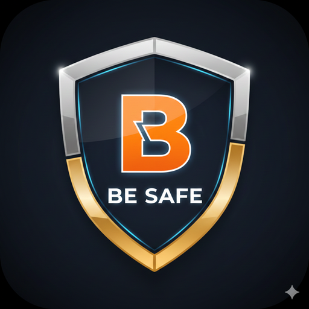

Safer sites.
Stronger teams.
مواقع عمل أكثر أمانًا
وفرق أقوى.
I'm Abdul Rahman Zain, a senior HSE professional with 10 years of experience with some of the largest companies in Saudi Arabia and Egypt. BE SAFE is where I share practical HSE tools, templates and know-how.
أنا عبدالرحمن زين، أخصائي أول في الصحة والسلامة والبيئة بخبرة 10 سنوات مع كبرى الشركات في السعودية ومصر. في BE SAFE أشارك أدوات ونماذج ومعرفة عملية في السلامة المهنية.

Abdul Rahman Zainعبدالرحمن زين
From junior HSE officer to deputy HSE manager on a mega MEP project for the Haram expansion in Makkah, and leading the HSE technical office on a national housing megaproject. I combine site safety with data, building HSE dashboards and field apps in Power BI and AppSheet.
من مسؤول سلامة مبتدئ إلى نائب مدير السلامة في مشروع MEP ضخم لتوسعة الحرم في مكة المكرمة، وقيادة المكتب الفني للسلامة في مشروع إسكان وطني ضخم. أجمع بين السلامة في الموقع والبيانات، من خلال بناء لوحات بيانات وتطبيقات ميدانية باستخدام Power BI و AppSheet.
Read my full profile →اقرأ ملفي الكامل ←What I know bestما أتقنه
Hands-on experience across the full HSE cycle on mega projects.
خبرة عملية في دورة السلامة الكاملة في المشاريع الكبرى.
ISO 45001 & AuditingISO 45001 والتدقيق
Gap analysis, implementation and audit readiness.
تحليل الفجوات والتطبيق والاستعداد للتدقيق.
Risk & Permit to Workالمخاطر وتصاريح العمل
HIRA, JSA and PTW for lifting, hot work, confined space and electrical.
HIRA و JSA وتصاريح العمل للرفع والأعمال الساخنة والأماكن المغلقة والكهرباء.
HSE Reporting & Digital HSEالتقارير والسلامة الرقمية
KPI reporting systems, Power BI dashboards and AppSheet field apps.
أنظمة تقارير المؤشرات، لوحات Power BI، وتطبيقات AppSheet الميدانية.
Tools and templates for your teamأدوات ونماذج لفريقك
Risk Matrix & Safety KPIsمصفوفة المخاطر ومؤشرات السلامة
Rate any risk in seconds and calculate TRIR, LTIFR and severity rate.
قيّم أي خطر خلال ثوانٍ، واحسب TRIR و LTIFR ومعدل الخطورة.
Open tools →افتح الأدوات ←Safety Libraryمكتبة السلامة
Permits to work, JSA, risk assessments, checklists and toolbox talks.
تصاريح العمل، JSA، تقييم المخاطر، قوائم الفحص ومحاضرات التوعية.
Browse library →تصفّح المكتبة ←Let's connectلنتواصل
For professional inquiries, opportunities or a question about HSE, send me a message.
للاستفسارات المهنية أو الفرص أو أي سؤال في السلامة، أرسل لي رسالة.